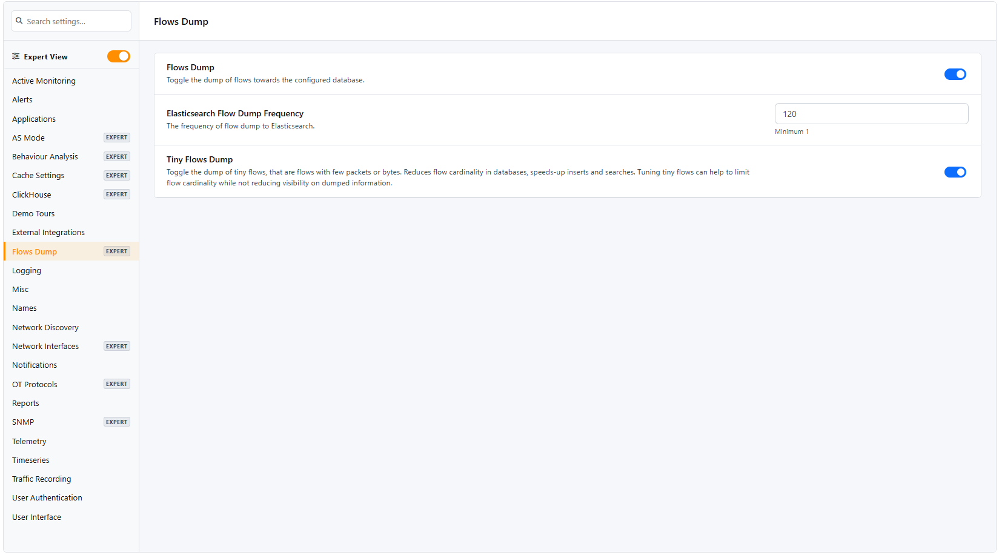

Дамп потоков (ClickHouse)
Ntopng поддерживает сброс потоков в несколько нижестоящих баз данных, а именно ClickHouse, Elasticsearch и Syslog. Дамп потоков включается с помощью опции -F.
Примечание
Поддержка ClickHouse — рекомендуемая серверная часть базы данных, используемая для дампа потоков и оповещений.
Когда дамп потоков включен, создается новый Настройки дампа потока в настройках появится вкладка.

Настройки дампа потоков
Настройки дампа потока записи:
Дамп потоков: для переключения дампа потоков во время выполнения ntopng. С помощью этого переключателя можно включить или выключить дамп потоков. Отключение дампа потоков может быть полезно, когда в целевой нижестоящей базе данных не хватает места, в целях отладки или когда пользователю нужны только оповещения, хранящиеся в Elasticsearch.
Свалка крошечных потоков: для переключения дампа крошечных потоков. Крошечные потоки — это небольшие потоки, то есть потоки, общая сумма которых меньше определенного настраиваемого количества пакетов или байтов. Исключение крошечных потоков из дампа — эффективная стратегия уменьшения количества сбрасываемых потоков. Это сокращение наиболее эффективно, когда сбрасываемые потоки используются для анализа на основе объема. Не рекомендуется использовать эту опцию, если для анализа безопасности используются дампированные потоки.
ElasticSearch Частота сброса потока: частота сброса потока в сторону ElasticSearch.
Эти настройки эффективны для всех баз данных.